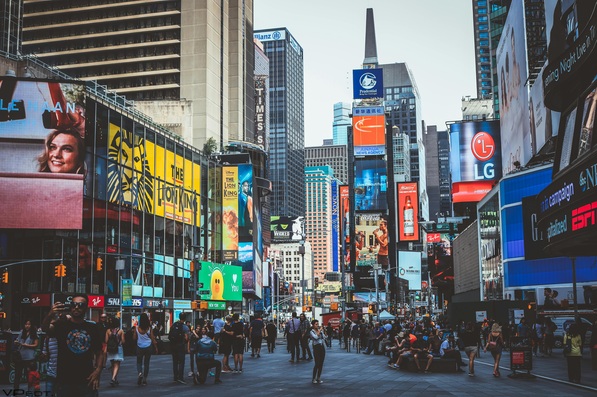

New York City, USA
New York City is a symbol of ambition, diversity, and endless energy. From Times Square and Central Park to the Statue of Liberty, the city offers an unforgettable experience. Each neighborhood — from Manhattan to Brooklyn — has its own unique character. Whether it’s catching a Broadway show, shopping in SoHo, or walking the Brooklyn Bridge, NYC never sleeps.
Beyond its skyline, New York is a city of stories and dreams. Street performers in Central Park, artists in Brooklyn, and the hum of taxis all blend into its iconic energy. Visitors can explore world-class museums, dine from every cuisine imaginable, and experience the heartbeat of modern culture. Whether it’s your first visit or your tenth, New York always feels new.
New York buzzes with creativity, ambition, and nonstop motion. From Broadway shows to quiet Central Park walks, it’s a city of endless experiences. Every visit feels different — full of energy, culture, and inspiration.